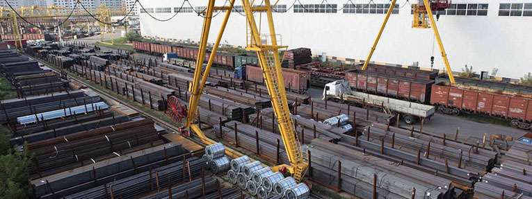
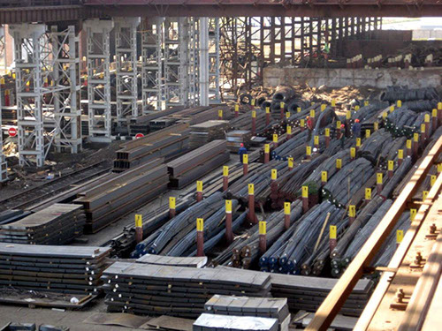

По сравнению с другими альтернативными современными конструкционными материалами, она выигрывает своими демократическими ценами и долговечностью использования. Среди огромного разнообразия новичку может быть достаточно непросто сразу разобраться в ассортименте изделий, но наш магазин металлопроката постарается Вам в этом помочь.
Для начала нужно отметить различие по форме и размеру согласно ГОСТ. В зависимости от нужд различных областей промышленности, металлопрокат выпускается разной формы и размера. Крупногабаритные металлические изделия востребованы в строительной отрасли при возведении зданий, а более мелкие детали необходимы, как элементы различных механизмов, узлов в электротехнике, а так же машинах и агрегатах. Естественно, в таких сферах как аэрокосмическое приборо- и машиностроение, самолето-, автомобилестроение, а так же железнодорожное машино- и путестроение, металлопрокат является неотъемлемой и незаменимой частью.
Наряду с геометрией изделий, важнейшим критерием выбора является марка стали, из которой выпускается металлопрокат. Это обусловлено такими сферами его применения, требующими определенного качества металла и его способностью приспособиться к явлениям окружающей среды - частым, либо существенным перепадам температур, агрессивности среды использования, направленным нагрузкам на растяжение и изгиб. Широкий выбор сортамента металлопроката предполагает: балку, швеллер, арматуру, трубу, профнастил и другие изделия.
Команда «ГОРОД СТАЛИ» всегда готова профессионально проконсультировать Вас по любому продукту и его цене, помочь Вам определиться с выбором, оптимально соберут заказ. Сотрудники нашей компании так же помогут вам организовать доставку груза. По любым вопросам Вы всегда можете обратиться к нашим специалистам по телефону в НОВОСИБИРСКЕ - +7 913 949 3120.
Наша Металлобаза продает не только готовые стандартные изделия, но и принимает индивидуальные заявки на их производство по эскизам и чертежам заказчиков. Мы предлагаем Вам не только приобрести у нас оцинкованный, нержавеющий, черный металлопрокат, но, и предоставляем дополнительные услуги по размерной резке, обработке металлопроката.
Покупая металл у нас на металлобазе, Вы делаете грамотный выбор, ведь мы готовы предложить:
Металлопрокат
Металлопрокат, как продукт промышленного производства, крайне необходим и широко применяем во всех сферах современной промышленности и быта. Бурный рост строительства жилых зданий и коммерческих сооружений напрямую ведет к увеличению спроса на металлические изделия. И приоритетом в выборе такого металлопроката на складе сегодня, конечно же, является качество его производства, от которого зависит долговечность и безопасность объекта.По сравнению с другими альтернативными современными конструкционными материалами, она выигрывает своими демократическими ценами и долговечностью использования. Среди огромного разнообразия новичку может быть достаточно непросто сразу разобраться в ассортименте изделий, но наш магазин металлопроката постарается Вам в этом помочь.
Для начала нужно отметить различие по форме и размеру согласно ГОСТ. В зависимости от нужд различных областей промышленности, металлопрокат выпускается разной формы и размера. Крупногабаритные металлические изделия востребованы в строительной отрасли при возведении зданий, а более мелкие детали необходимы, как элементы различных механизмов, узлов в электротехнике, а так же машинах и агрегатах. Естественно, в таких сферах как аэрокосмическое приборо- и машиностроение, самолето-, автомобилестроение, а так же железнодорожное машино- и путестроение, металлопрокат является неотъемлемой и незаменимой частью.
Наряду с геометрией изделий, важнейшим критерием выбора является марка стали, из которой выпускается металлопрокат. Это обусловлено такими сферами его применения, требующими определенного качества металла и его способностью приспособиться к явлениям окружающей среды - частым, либо существенным перепадам температур, агрессивности среды использования, направленным нагрузкам на растяжение и изгиб. Широкий выбор сортамента металлопроката предполагает: балку, швеллер, арматуру, трубу, профнастил и другие изделия.
Команда «ГОРОД СТАЛИ» всегда готова профессионально проконсультировать Вас по любому продукту и его цене, помочь Вам определиться с выбором, оптимально соберут заказ. Сотрудники нашей компании так же помогут вам организовать доставку груза. По любым вопросам Вы всегда можете обратиться к нашим специалистам по телефону в НОВОСИБИРСКЕ - +7 913 949 3120.
Наша Металлобаза продает не только готовые стандартные изделия, но и принимает индивидуальные заявки на их производство по эскизам и чертежам заказчиков. Мы предлагаем Вам не только приобрести у нас оцинкованный, нержавеющий, черный металлопрокат, но, и предоставляем дополнительные услуги по размерной резке, обработке металлопроката.
Покупая металл у нас на металлобазе, Вы делаете грамотный выбор, ведь мы готовы предложить:
-
широкий ассортимент металлопроката,
-
демократичные цены и специальные предложения для оптовиков,
-
качественную сертифицированную продукцию от проверенных изготовителей,
-
оперативную доставку собственным автотранспортом, а так же доставку через транспортные компании в любой регион России,
-
услуги по изготовлению и обработке металлопроката (например, резка в размер),
-
максимально удобные способы оплаты заказов (включая оплату по факту поставки товара),
-
бесплатные консультации специалистов по всем вопросам выбора и покупки металла.
-
Приоритетом нашей работы является поддержание имиджа нашей компании на высоком уровне. Мы заинтересованы в долговременном сотрудничестве на приятных взаимовыгодных условиях.
